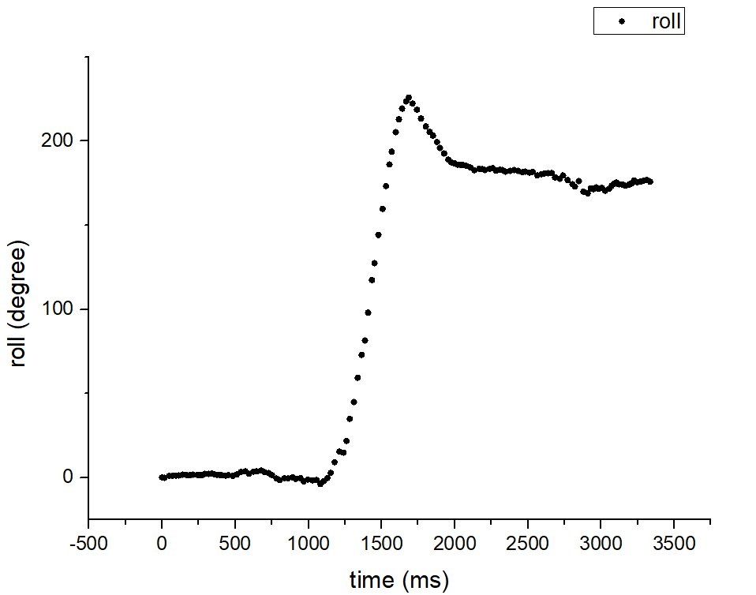
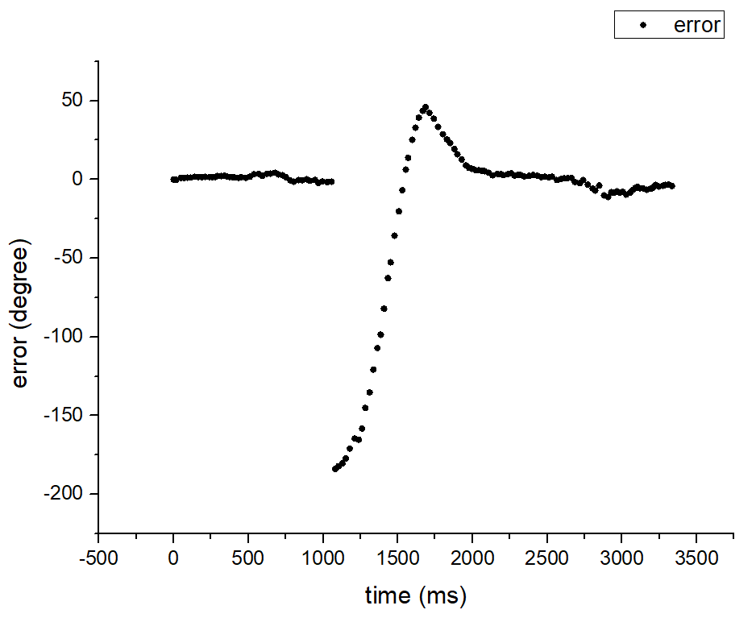
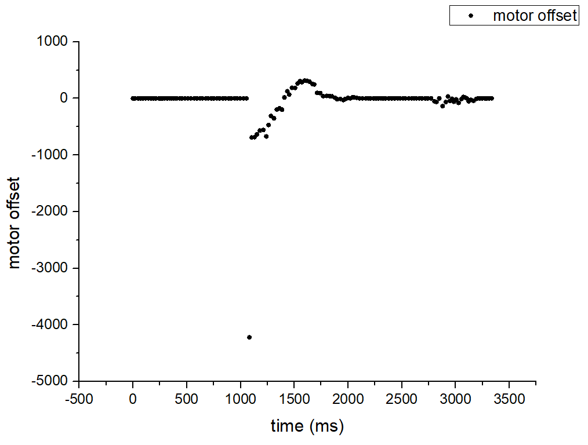
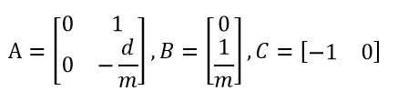
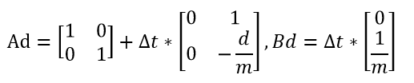
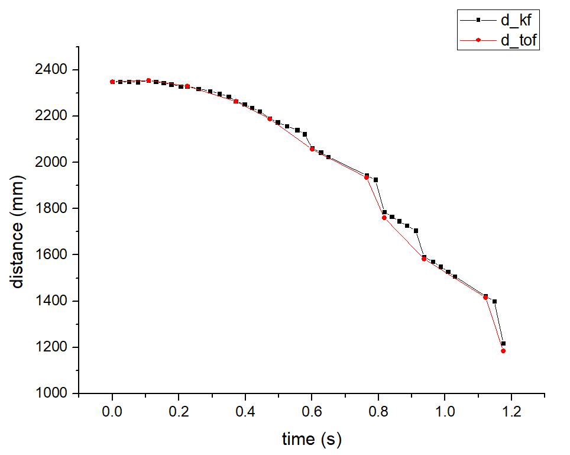

Parts Required
1 x Fully assembled robot, with Artemis, batteries, ToF sensor, and IMU.
Stunt 1: Drift much ?
Task Description： The robot will drive fast forward, and initiate a 180-degree turn with drift such that before it starts driving backward, it reaches a distance 0.6m from the wall.
PID Controller
Similar to Lab6, the input is current angle and setpoint, while the output is the PWM value for the motor control. In Lab6, I set the robot to stop once the new setpoint is sent and then do the drift action and go backward. This method can definitely achieve the task. However, it is likely to stop several times in the process. To be more specific, the car may drift slightly as it travels forward. Once the error is greater than the threshold, it will stop and adjust, which will cost a lot of time.
To solve this problem, I set a base speed for the robot and calculate the motor offset by PID controller. The PWM values for the right and left motor are base speed plus or minus motor offset. Like Lab6 , P and D controll are enough. According to my test, when KP = 4 and KD = 0.5, the robot acts well. Below are the roll angles, errors and motor offsets when the PID was implemented.


The motor offset will be extremely large, especially when the setpoint suddenly changes. To avoid the PWM value being greater than 255, I set a parameter named 'SPEED_MAX', which is less than 255, to be the upper limit. The right and left motor values are shown in the below figures.

void
motor_control(){
int motor_left, motor_right;
motor_right=SPEED_BASE+MOTOR_OFFSET;
motor_left=SPEED_BASE-MOTOR_OFFSET;
if (abs(motor_right)>SPEED_MAX) motor_right=SPEED_MAX * motor_right/abs(motor_right);
if (abs(motor_left)>SPEED_MAX) motor_left=SPEED_MAX * motor_left/abs(motor_left);
if (motor_right>0){
analogWrite(RightFoward, motor_right);
analogWrite(RightBack, 0);
}
else{
analogWrite(RightBack, abs(motor_right));
analogWrite(RightFoward, 0);
}
if (motor_left>0){
analogWrite(LeftFoward, motor_left);
analogWrite(LeftBack, 0);
}
else{
analogWrite(LeftBack, abs(motor_left));
analogWrite(LeftFoward, 0);
}
}
Estimate the Distance with Kalman Filter
By implementing the Kalman Filter in the robot, we can get a faster controller. While the sensor is ready, both prediction and update will be executed. If the ToF sensor data is not ready, Kalman Filter will only do the prediction so that we can still get the distance information and generate a motor input value.
According to Lab7, the A, B, C matrices of the Kalman Filter are:
Through step response, we can get d and m. In my robot model, the A = [0,1;0,-4.476], B = [0;7072.48]. Since the distances are measured discretely, the discrete A and B is going to be:
In this program, the delta_t was nearly 0.026448 s, while sigma_u = [27.7^2,0;0,27.7^2] and sigma_z = 20^2 Related code can be found in Lab7.
The figure shows that Kalman Filter would do 3-4 times predictions before the measurement data was ready. Sometimes, however, the intervals of two estimations would become longer. The reason was the PID control took some time. In the main loop, once IMU data is ready, Artemis will calculate the motor offset by the PID controller and then estimate the distance with Kalman Filter. In such a situation, the prediction may not be so accurate.Demo
Stunt 2: Draw a pentagram
Task Description： The robot moves forward a certain distance and then rotates 144 degrees in place. Perform the above movement five times. The trajectory can be regraded as a pentagram.
I made use of the Lab6 code to do this stunt. The followin commands were sent to the Artemis.
Here is the demo.
Stunt 3: Flip and Turn
Task Description： The robot will drive fast forward, do the flip and turn 90 degrees in the air.
The robot should move forward at high speed and suddenly make the motors spin backward to do the flip. I found that my robot sometimes would deflect after flipping during the tests. I guess the reason was motors did not spin at the same rate. My right motor was more powerful. Therefore, I set different PWM values to the motor when spinning backward and achieve the Flip and Turn. The key to the success of this stunt is that the battery should have enough power. Here is the related code.
void
loop()
{
analogWrite(RightFoward, 255);
analogWrite(LeftFoward, 255);
analogWrite(LeftBack, 0);
analogWrite(RightBack, 0);
delay(1000);
analogWrite(RightFoward, 0);
analogWrite(LeftFoward, 0);
analogWrite(RightBack, 255);
analogWrite(LeftBack, 220);
delay(1500);
analogWrite(RightFoward, 255);
analogWrite(RightBack, 255);
analogWrite(LeftFoward, 255);
analogWrite(LeftBack, 255);
}
Bloopers